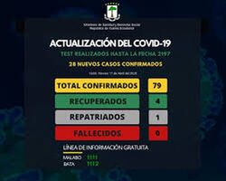

В Экваториальной Гвинее не регистрируют новых смертей от COVID-19
В Экваториальной Гвинее зарегистрировано, по последним данным, 15 924 человека с подтвержденным коронавирусом, столько же, сколько и днем ранее.
В настоящее время уровень подтвержденных пациентов с коронавирусом за последние 14 дней составляет 1 на сто тысяч жителей, поэтому их уровень подтвержденного коронавируса очень низок по сравнению с остальными 193 странами, в которых подтверждены случаи в настоящее время.
На данный момент от коронавируса умерло 183 человека, за последние сутки летальных исходов от коронавируса не было.
При анализе этих данных важно помнить, что Экваториальная Гвинея с населением 1 402 985 человек является страной с небольшим населением, как видно из таблицы населения мира, которую мы публикуем на сайте datosmacro.com.
В Экваториальной Гвинее в 2020 году в среднем умирали 34 человека в день, цифра, которая в этом году может быть увеличена за счет числа смертей от коронавируса. Если вам интересно, вы можете проверить цифры смертности в Экваториальной Гвинее. Летальность (умерших по сравнению с подтвержденными) составляет 1,15%.
Вы можете увидеть список стран со случаями коронавируса в данных о коронавирусе по странам и увидеть всю экономическую информацию Экваториальной Гвинеи в Экономике Экваториальной Гвинеи. В следующей таблице вы можете увидеть эволюцию коронавируса в Экваториальной Гвинее.
